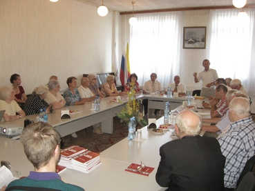

Напомним, что над созданием этой книги с 2006 года работает Фонд по поиску и увековечению жертв Второй мировой войны «Жить и Помнить». Инициатором публикации такого издания стал писатель, журналист, безвременно ушедший из жизни Георгий Харитонов, а учредителем самого фонда стала Тверская торгово-промышленная палата.
Напомним, что над созданием этой книги с 2006 года работает Фонд по поиску и увековечению жертв Второй мировой войны «Жить и Помнить». Инициатором публикации такого издания стал писатель, журналист, безвременно ушедший из жизни Георгий Харитонов, а учредителем самого фонда стала Тверская торгово-промышленная палата.
В середине 90х годов была издана Всероссийская Книга Памяти погибших в годы Великой Отечественной войны солдат, включающая в себя и региональные издания. Страна готовилась к 50летию Победы, поэтому составлялись они в спешке, были и ошибки, неточности. Многие имена погибших красноармейцев еще оставались забытыми. Сегодня электронная версия Книги Памяти содержит более пяти тысяч имен советских солдат Великой Отечественной войны, уроженцев Калининской области (в ее довоенных границах), считавшихся пропавшими без вести. Средств на издание книги, которая бы включала все эти имена, у фонда нет, поэтому было решено издавать ее поэтапно. Так, были опубликованы первые две главы книги, включающие в себя имена погибших воинов, чьи фамилии начинались на букву «А» и «Б» соответственно, и вот теперь издана третья глава, в ней – около 400 сообщений о солдатах, фамилии которых начинаются на букву «В».
При составлении Книги Памяти специалисты фонда «Жить и Помнить» изучали документы по учету безвозвратных потерь Красной Армии Центрального архива Министерства обороны РФ, переводы персональных карт военнопленных и других трофейных документов вермахта, результаты работы поисковых отрядов России, материалы МО Республики Беларусь и Книги Памяти Украины, информации о сборных, фронтовых и транзитных лагерях советских военнопленных в Украине, Литве, Латвии, Эстонии и России. Благодаря кропотливому, скрупулезному труду сотрудников фонда краткие биографические сообщения представлены в книге максимально полно.
На презентации третьей главы Книги Памяти присутствовали ученыеисторики, представители общественности и ветеранских организаций, члены поисковых отрядов, представители центра патриотического воспитания области, члены областной организации детейсирот войны. Многие выражали благодарность составителям книги за осуществление столь масштабного проекта, который «позволит еще больше укрепить связь поколений, пробудить у россиян дух патриотизма и гордости за своих отцов, дедов и прадедов, победивших фашистов».
– Мы очень признательны Тверской торговопромышленной палате и областному комитету по делам молодежи, благодаря которым у нас появились средства на издание очередной главы Книги Памяти, – говорит ответственный секретарь фонда «Жить и Помнить» Александр Терентьев. – Каждый день в наш фонд обращаются от 5 до 15 граждан, как жителей Тверской области, так и других регионов России. Все эти люди многие годы ищут хоть какойто весточки о своих родных, не вернувшихся с войны. После каждого издания книги к нам приходят благодарственные письма, что всегда очень приятно, так как наш труд многим возвращает веру и надежду. Новую Книгу Памяти мы будем рассылать в библиотеки, школы, музеи, ветеранские и общественные организации. Нам очень хочется надеяться и на помощь региональных властей. Впереди еще колоссальный объем работы по поискам. Для издания книг необходимо целевое финансирование. К примеру, в Республике Татарстан редакция Книги Памяти существует при правительстве. Над их созданием трудятся более 80 человек, конечно, их работа более результативна. Мы тоже очень нуждаемся в добровольческой и финансовой помощи.